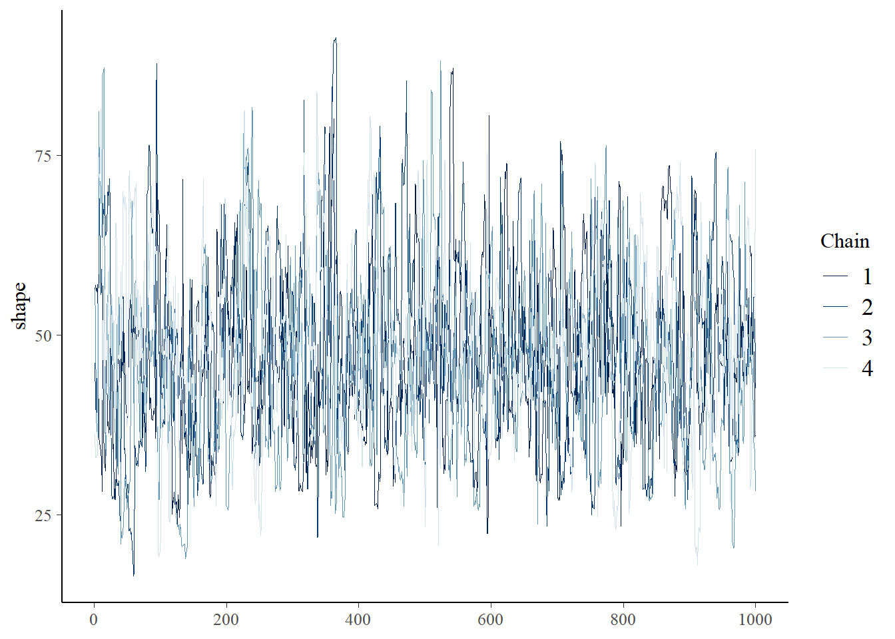
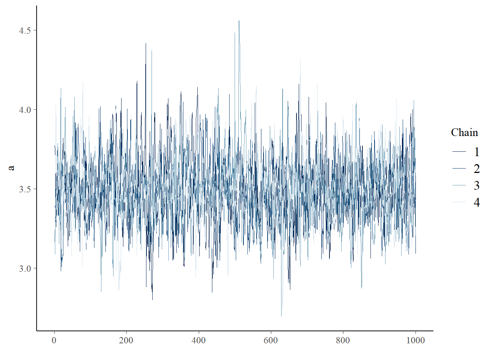
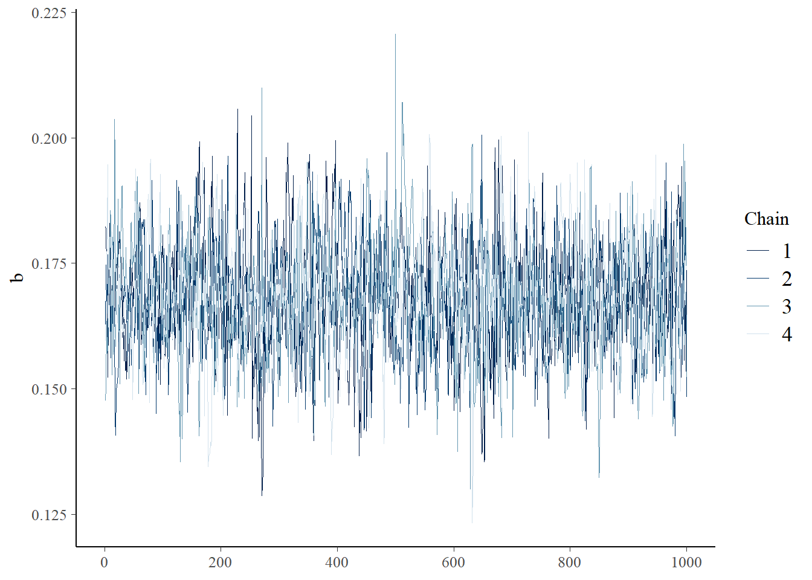
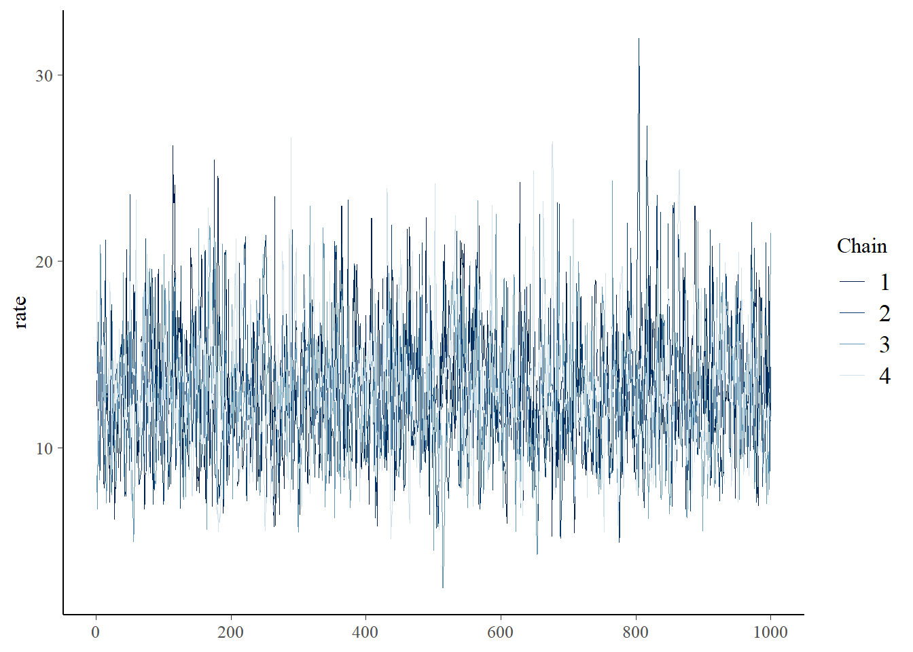
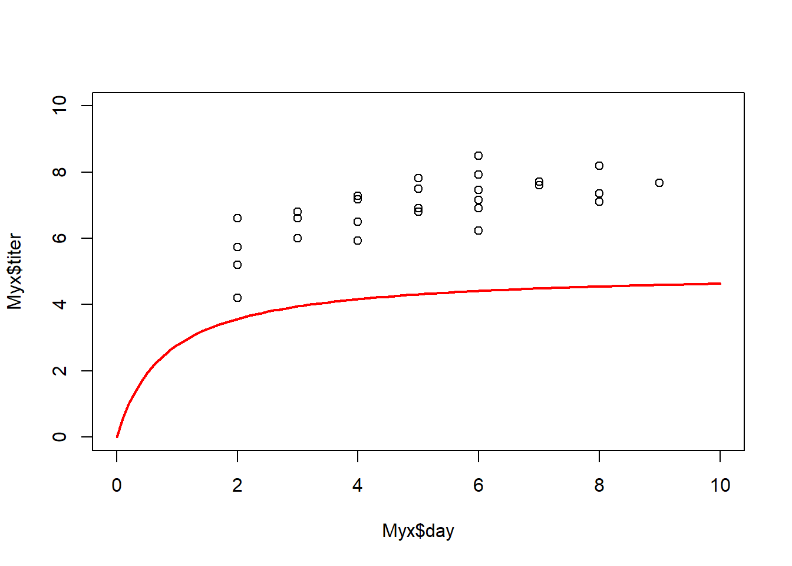
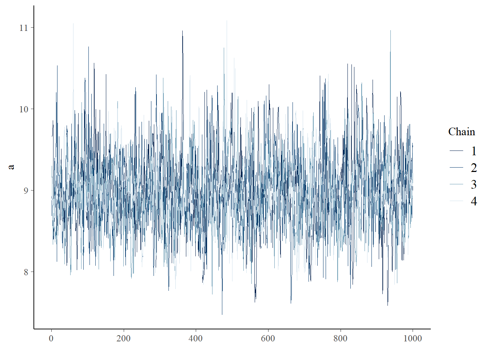
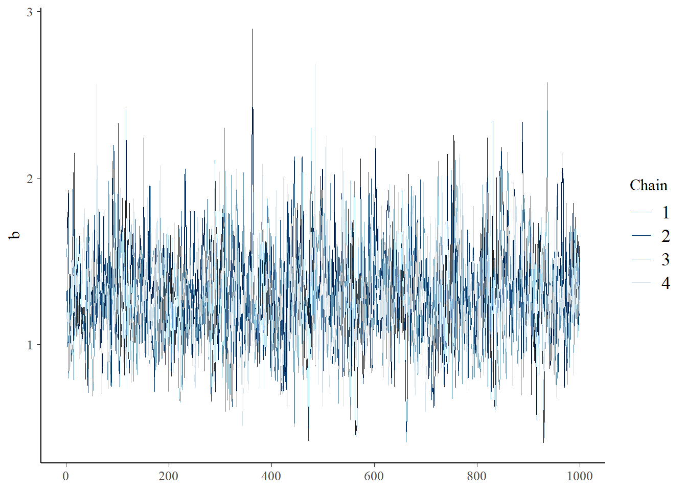
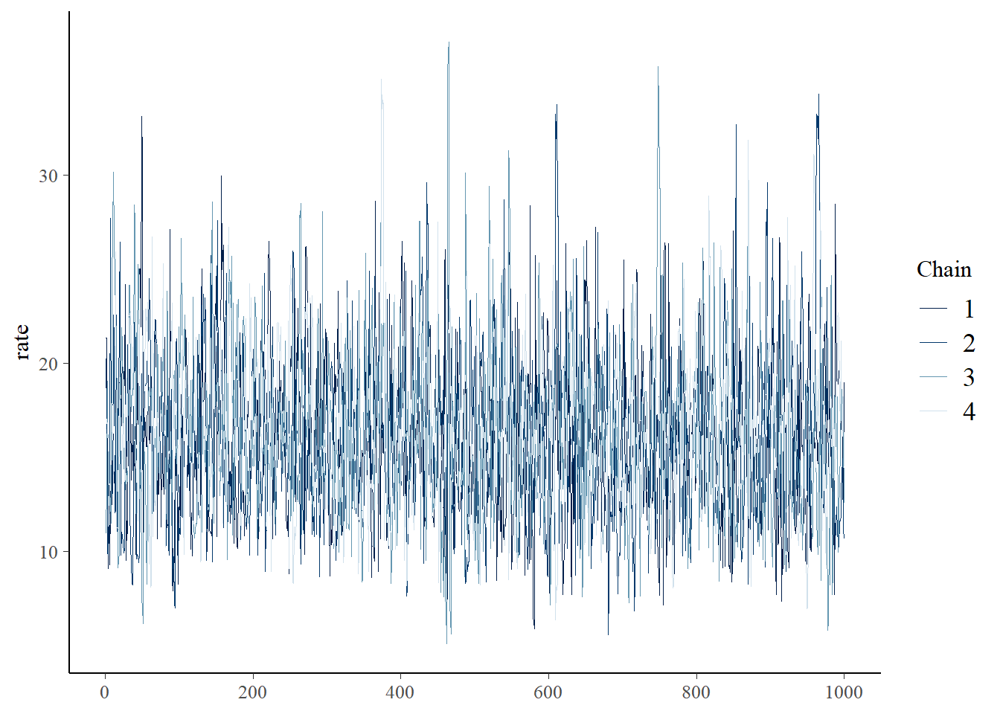
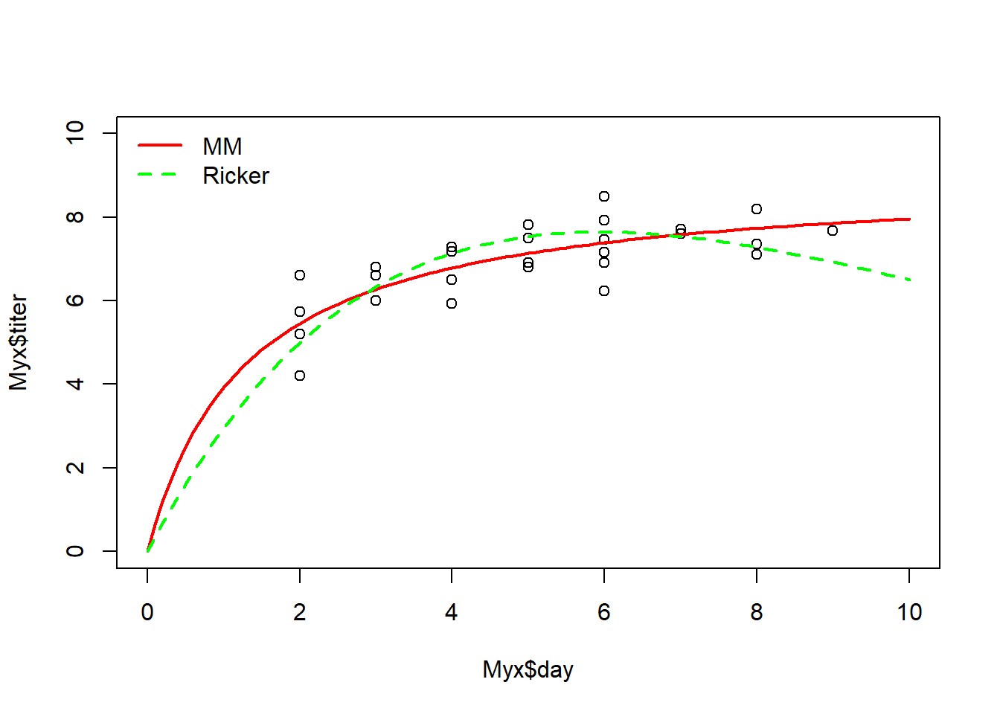
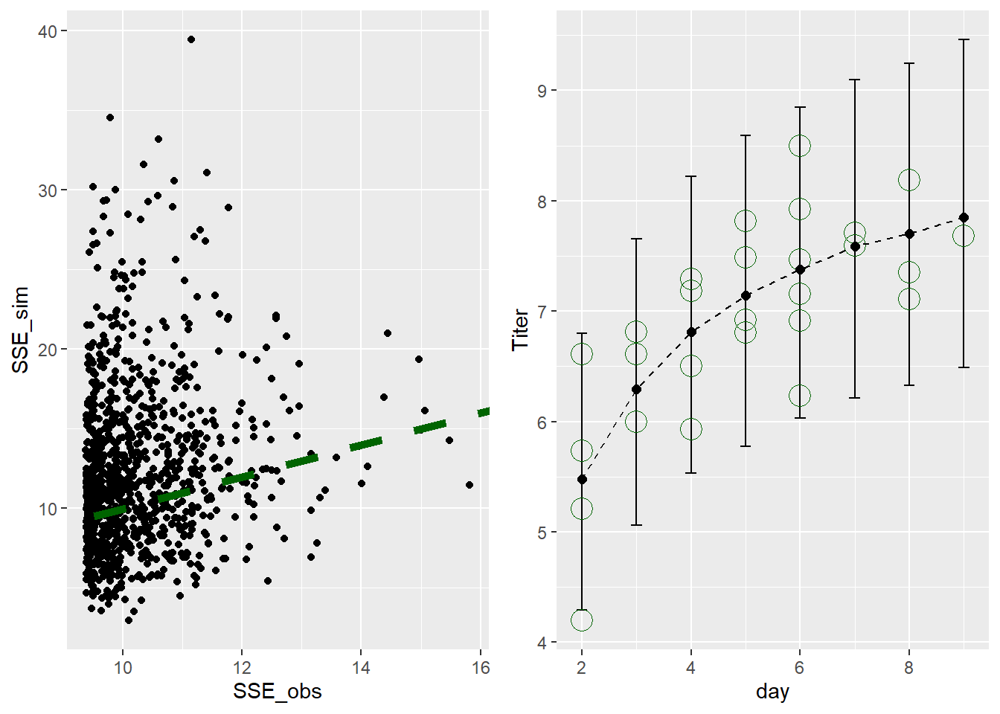

As with all lab reports, your answers will either take the form of R functions or short written responses (submitted via WebCampus). The R functions should be saved in an R script file (‘.R’ extension) and uploaded via WebCampus. See WebCampus for the due date for this lab.
If you haven’t already installed stan on your computer, use this link. We will be using ‘cmdstanr’. You are welcome to use ‘rstan’ if you prefer- it just isn’t updated as often, so you will be using a slightly older version of stan.
In this lab we will be applying a Bayesian approach to model fitting using the same myxomatosis dataset and data generating model that we used in the previous lab (lab 3: maximum likelihood inference). To do this, we’ll be using the program ‘stan’ which is currently one of the most popular “probabilistic programming languages” (PPL). Other PPLs you may encounter include BUGS (one implementation of which is called “JAGS”), and “pyMC” (a python package for Bayesian inference).
In general, PPLs provide a clean language for specifying a probabilistic data-generating model. The program takes a fully specified data generating model (all deterministic and stochastic components specified explicitly), along with data (observed realizations of the specified data generating model), and outputs samples from the posterior (usually using MCMC).
Stan runs on all platforms and although it is written in C++, it interfaces seamlessly with R, if you download the “cmdstanr” package or ‘rstan’ package! Stan is not the only way to do Bayesian analyses. Stan uses an efficient implementation of Hamiltonian Monte Carlo, called the No-U-turn (NUTS) sampler.
To familiarize ourselves with the stan language, let’s look at some stan code (for our favorite myxomatosis dataset).
data {
int<lower=0> N;
vector[N] titer;
}
parameters {
real<lower=0> shape;
real<lower=0> rate;
}
model {
shape ~ gamma(0.001,0.001); // prior on shape
rate ~ gamma(0.001,0.001); // prior on rate
titer ~ gamma(shape, rate); // likelihood
}
The syntax in Stan has some similarities with R, but it’s really a different beast. Luckily the Stan user guide and reference manual are excellent and thorough: https://mc-stan.org/
Stan is a strongly typed language: types of all variables must always be declared before you use a variable.
Every line of code must end with a semicolon.
Comments are preceded by two forward slashes (“//”) instead of a hash symbol (“#”)
The equals sign is used to define deterministic relationships (the arrow is not allowed).
The tilde operator (~) is used to define random variables, and can be read as “is distributed as:”. You will also see the posterior distribution specified by incrementing the target log probability. For example, the following two lines do the same thing:
target += poisson_lpmf(count | lambda); // increment target distribution
count ~ poisson(lambda); // same thing
In the model code, you may specify your priors. If no priors are specified, stan assumes a flat (potentially improper) prior across the range of support you provide in the ‘parameters’ block. Here we are using ‘vague’ priors, meaning that the probability is ‘spread out’ fairly evenly over a relatively wide parameter space.
Setting up the model!
We can use the ‘cmdstanr’ package in R (or rstan) to run Stan through R and have the output returned to R so that we can analyze and manipulate it further.
First, let’s install and load the ‘cmdstanr’ package.
install.packages("cmdstanr", repos = c('https://stan-dev.r-universe.dev', getOption("repos")))More detailed instructions can be found here: https://mc-stan.org/cmdstanr/articles/cmdstanr.html.
Writing out the model
In general it’s easiest to write your stan model in a separate script with the ‘.stan’ extension. Do do this you can open a new ‘stan’ model script in Rstudio- this gives nice syntax highlighting and some tools that allow you to check your code. You may need to install ‘rstan’ package to use the convenient ‘check on save’ function.
To take advantage of parallel processing, use the following line of code at the top of your script:
options(mc.cores = 4)There are a couple other packages that will help us make sense of the results:
library(cmdstanr)
library(bayesplot)
library(posterior)Here is the stan script for the basic myxomatosis model again:
data {
int<lower=0> N;
vector[N] titer;
}
parameters {
real<lower=0> shape;
real<lower=0> rate;
}
model {
shape ~ gamma(0.001,0.001); // prior on shape
rate ~ gamma(0.001,0.001); // prior on rate
titer ~ gamma(shape, rate); // likelihood
}
Compile the model
Stan is a compiled language, so we need to compile our model before running it. Here’s how we do it in cmdstanr:
mod1 <- cmdstan_model("myx.stan") # Compile stan modelBundling the data
We will need to pass the data from R to Stan. To be read into Stan, the data need to be bundled together in a list object. The data (list elements) need to have the same names as specified in the Stan model file:
First we get the data we want into R (we know the drill!):
library(emdbook)
MyxDat <- MyxoTiter_sum
Myx <- subset(MyxDat,grade==1) #Data set from grade 1 of myxo data
head(Myx)## grade day titer
## 1 1 2 5.207
## 2 1 2 5.734
## 3 1 2 6.613
## 4 1 3 5.997
## 5 1 3 6.612
## 6 1 3 6.810Then we bundle the data as a list, which is what JAGS wants!
# Encapsulate the data into a single "list" object ------------------
stan_data <- list(
N = nrow(Myx),
titer = Myx$titer
)
stan_data## $N
## [1] 27
##
## $titer
## [1] 5.207 5.734 6.613 5.997 6.612 6.810 5.930 6.501 7.182 7.292 7.819 7.489
## [13] 6.918 6.808 6.235 6.916 4.196 7.682 8.189 7.707 7.597 7.112 7.354 7.158
## [25] 7.466 7.927 8.499Setting the initial values for our Markov chain(s)
It can be helpful to define an “initial value generator” function that randomly generates a list of initial values for each parameter– this way, each MCMC chain can automatically be initialized with different starting values! By default, stan uses random values between -2 and 2 to initialize your chain…
inits <- function(){
list(
shape=runif(1,20,100),
rate=runif(1,1,10)
)
}
inits()## $shape
## [1] 90.65024
##
## $rate
## [1] 5.821315Now we’ll run this model through Stan:
# Run stan ------------------
fit1 <- mod1$sample( # run hamiltonian monte carlo
data = stan_data,
chains = 4,
init = inits,
iter_warmup = 500,
iter_sampling = 1000
)## Running MCMC with 4 parallel chains...
##
## Chain 1 Iteration: 1 / 1500 [ 0%] (Warmup)
## Chain 1 Iteration: 100 / 1500 [ 6%] (Warmup)
## Chain 1 Iteration: 200 / 1500 [ 13%] (Warmup)
## Chain 1 Iteration: 300 / 1500 [ 20%] (Warmup)
## Chain 1 Iteration: 400 / 1500 [ 26%] (Warmup)
## Chain 1 Iteration: 500 / 1500 [ 33%] (Warmup)
## Chain 1 Iteration: 501 / 1500 [ 33%] (Sampling)
## Chain 1 Iteration: 600 / 1500 [ 40%] (Sampling)
## Chain 1 Iteration: 700 / 1500 [ 46%] (Sampling)
## Chain 1 Iteration: 800 / 1500 [ 53%] (Sampling)
## Chain 1 Iteration: 900 / 1500 [ 60%] (Sampling)
## Chain 1 Iteration: 1000 / 1500 [ 66%] (Sampling)
## Chain 1 Iteration: 1100 / 1500 [ 73%] (Sampling)
## Chain 1 Iteration: 1200 / 1500 [ 80%] (Sampling)
## Chain 1 Iteration: 1300 / 1500 [ 86%] (Sampling)
## Chain 1 Iteration: 1400 / 1500 [ 93%] (Sampling)
## Chain 1 Iteration: 1500 / 1500 [100%] (Sampling)## Chain 2 Iteration: 1 / 1500 [ 0%] (Warmup)
## Chain 2 Iteration: 100 / 1500 [ 6%] (Warmup)
## Chain 2 Iteration: 200 / 1500 [ 13%] (Warmup)
## Chain 2 Iteration: 300 / 1500 [ 20%] (Warmup)
## Chain 2 Iteration: 400 / 1500 [ 26%] (Warmup)
## Chain 2 Iteration: 500 / 1500 [ 33%] (Warmup)
## Chain 2 Iteration: 501 / 1500 [ 33%] (Sampling)
## Chain 2 Iteration: 600 / 1500 [ 40%] (Sampling)
## Chain 2 Iteration: 700 / 1500 [ 46%] (Sampling)
## Chain 2 Iteration: 800 / 1500 [ 53%] (Sampling)
## Chain 2 Iteration: 900 / 1500 [ 60%] (Sampling)
## Chain 2 Iteration: 1000 / 1500 [ 66%] (Sampling)
## Chain 2 Iteration: 1100 / 1500 [ 73%] (Sampling)
## Chain 2 Iteration: 1200 / 1500 [ 80%] (Sampling)
## Chain 2 Iteration: 1300 / 1500 [ 86%] (Sampling)
## Chain 2 Iteration: 1400 / 1500 [ 93%] (Sampling)
## Chain 2 Iteration: 1500 / 1500 [100%] (Sampling)## Chain 3 Iteration: 1 / 1500 [ 0%] (Warmup)
## Chain 3 Iteration: 100 / 1500 [ 6%] (Warmup)
## Chain 3 Iteration: 200 / 1500 [ 13%] (Warmup)
## Chain 3 Iteration: 300 / 1500 [ 20%] (Warmup)
## Chain 3 Iteration: 400 / 1500 [ 26%] (Warmup)
## Chain 3 Iteration: 500 / 1500 [ 33%] (Warmup)
## Chain 3 Iteration: 501 / 1500 [ 33%] (Sampling)
## Chain 3 Iteration: 600 / 1500 [ 40%] (Sampling)
## Chain 3 Iteration: 700 / 1500 [ 46%] (Sampling)
## Chain 3 Iteration: 800 / 1500 [ 53%] (Sampling)
## Chain 3 Iteration: 900 / 1500 [ 60%] (Sampling)
## Chain 3 Iteration: 1000 / 1500 [ 66%] (Sampling)
## Chain 3 Iteration: 1100 / 1500 [ 73%] (Sampling)
## Chain 3 Iteration: 1200 / 1500 [ 80%] (Sampling)
## Chain 3 Iteration: 1300 / 1500 [ 86%] (Sampling)
## Chain 3 Iteration: 1400 / 1500 [ 93%] (Sampling)
## Chain 3 Iteration: 1500 / 1500 [100%] (Sampling)## Chain 4 Iteration: 1 / 1500 [ 0%] (Warmup)
## Chain 4 Iteration: 100 / 1500 [ 6%] (Warmup)
## Chain 4 Iteration: 200 / 1500 [ 13%] (Warmup)
## Chain 4 Iteration: 300 / 1500 [ 20%] (Warmup)
## Chain 4 Iteration: 400 / 1500 [ 26%] (Warmup)
## Chain 4 Iteration: 500 / 1500 [ 33%] (Warmup)
## Chain 4 Iteration: 501 / 1500 [ 33%] (Sampling)
## Chain 4 Iteration: 600 / 1500 [ 40%] (Sampling)
## Chain 4 Iteration: 700 / 1500 [ 46%] (Sampling)
## Chain 4 Iteration: 800 / 1500 [ 53%] (Sampling)
## Chain 4 Iteration: 900 / 1500 [ 60%] (Sampling)
## Chain 4 Iteration: 1000 / 1500 [ 66%] (Sampling)
## Chain 4 Iteration: 1100 / 1500 [ 73%] (Sampling)
## Chain 4 Iteration: 1200 / 1500 [ 80%] (Sampling)
## Chain 4 Iteration: 1300 / 1500 [ 86%] (Sampling)
## Chain 4 Iteration: 1400 / 1500 [ 93%] (Sampling)
## Chain 4 Iteration: 1500 / 1500 [100%] (Sampling)## Chain 1 finished in 0.0 seconds.
## Chain 2 finished in 0.0 seconds.
## Chain 3 finished in 0.0 seconds.
## Chain 4 finished in 0.0 seconds.
##
## All 4 chains finished successfully.
## Mean chain execution time: 0.0 seconds.
## Total execution time: 0.4 seconds.Like almost anything in R, there is a ‘summary()’ method for fitted stan objects:
fit1$summary()## # A tibble: 3 × 10
## variable mean median sd mad q5 q95 rhat ess_bulk ess_tail
## <chr> <dbl> <dbl> <dbl> <dbl> <dbl> <dbl> <dbl> <dbl> <dbl>
## 1 lp__ -38.7 -38.4 1.01 0.714 -40.7 -37.8 1.00 1026. 1029.
## 2 shape 47.2 46.3 12.4 12.1 28.2 69.2 1.01 507. 552.
## 3 rate 6.82 6.69 1.80 1.78 4.11 10.0 1.01 499. 552.Rhat is a measure of convergence, or potential scale reduction factor (Gelman-Rubin diagnostic: at convergence, Rhat=1)
‘mad’ is median absolute deviation- similar to standard error
‘ess_bulk’ is effective sample size.
We can also extract our MCMC samples for further examination:
samples <- fit1$draws(format="draws_df")Let’s look at the traceplots:
bayesplot::mcmc_trace(samples,"shape")
bayesplot::mcmc_trace(samples,"rate")You can visually check for convergence here, using the traceplots – a converged run will look like white noise (fuzzy caterpillar) and the samples will not be hitting any ceilings or floors.
Parameter uncertainty: credible intervals
We can estimate the credible interval for each parameter using the quantile method or the HPD interval method.
## quantile method
shape95 = quantile(samples$shape,c(0.025,0.975))
rate95 = quantile(samples$rate,c(0.025,0.975))
shape95## 2.5% 97.5%
## 26.05148 73.29000rate95## 2.5% 97.5%
## 3.735216 10.591603## HPD method (highest posterior density intervals)
library(HDInterval)
shape95 = hdi(samples$shape,0.95)
rate95 = hdi(samples$rate,0.95)
shape95## lower upper
## 25.5606 72.0689
## attr(,"credMass")
## [1] 0.95rate95## lower upper
## 3.54856 10.36190
## attr(,"credMass")
## [1] 0.95Either way we compute it, the probability that the parameter is between these 2 numbers is 95%!
In this exercise, you are asked to implement a Ricker deterministic function to the Myxomatosis data in JAGS.
Write a stan script that runs the Myxomatosis/Ricker example from the previous (likelihood- Lab 3) lab.
Recall that we are modeling titer levels (grade 1 only) as a function of the days since infection. Submit this stan code as a stan file (.stan extension) via WebCampus.
Compile and generate samples from your stan code using the following syntax. I named my stan file ‘myx2.stan’.
## exercise 4.1 ---------
# test your stan code:
mod2 <- cmdstan_model("myx2.stan") # Compile stan model
stan_data <- list( # bundle data for stan
N = nrow(Myx),
titer = Myx$titer,
day=Myx$day
)
inits <- function(){
list(
a=runif(1,1,10),
b=runif(1,.01,0.1),
rate=runif(1,1,10)
)
}
# inits()
fit2 <- mod2$sample(
data = stan_data,
chains = 4,
init = inits,
iter_warmup = 500,
iter_sampling = 1000
)## Running MCMC with 4 parallel chains...
##
## Chain 1 Iteration: 1 / 1500 [ 0%] (Warmup)
## Chain 1 Iteration: 100 / 1500 [ 6%] (Warmup)
## Chain 1 Iteration: 200 / 1500 [ 13%] (Warmup)
## Chain 1 Iteration: 300 / 1500 [ 20%] (Warmup)
## Chain 1 Iteration: 400 / 1500 [ 26%] (Warmup)
## Chain 1 Iteration: 500 / 1500 [ 33%] (Warmup)
## Chain 1 Iteration: 501 / 1500 [ 33%] (Sampling)
## Chain 1 Iteration: 600 / 1500 [ 40%] (Sampling)
## Chain 1 Iteration: 700 / 1500 [ 46%] (Sampling)
## Chain 1 Iteration: 800 / 1500 [ 53%] (Sampling)
## Chain 1 Iteration: 900 / 1500 [ 60%] (Sampling)## Chain 1 Informational Message: The current Metropolis proposal is about to be rejected because of the following issue:## Chain 1 Exception: gamma_lpdf: Shape parameter[1] is 0, but must be positive finite! (in 'C:/Users/KSHOEM~1/AppData/Local/Temp/RtmpUDoLxR/model-4d54444a17e8.stan', line 19, column 2 to column 29)## Chain 1 If this warning occurs sporadically, such as for highly constrained variable types like covariance matrices, then the sampler is fine,## Chain 1 but if this warning occurs often then your model may be either severely ill-conditioned or misspecified.## Chain 1## Chain 1 Informational Message: The current Metropolis proposal is about to be rejected because of the following issue:## Chain 1 Exception: gamma_lpdf: Shape parameter[1] is 0, but must be positive finite! (in 'C:/Users/KSHOEM~1/AppData/Local/Temp/RtmpUDoLxR/model-4d54444a17e8.stan', line 19, column 2 to column 29)## Chain 1 If this warning occurs sporadically, such as for highly constrained variable types like covariance matrices, then the sampler is fine,## Chain 1 but if this warning occurs often then your model may be either severely ill-conditioned or misspecified.## Chain 1## Chain 1 Informational Message: The current Metropolis proposal is about to be rejected because of the following issue:## Chain 1 Exception: gamma_lpdf: Shape parameter[1] is 0, but must be positive finite! (in 'C:/Users/KSHOEM~1/AppData/Local/Temp/RtmpUDoLxR/model-4d54444a17e8.stan', line 19, column 2 to column 29)## Chain 1 If this warning occurs sporadically, such as for highly constrained variable types like covariance matrices, then the sampler is fine,## Chain 1 but if this warning occurs often then your model may be either severely ill-conditioned or misspecified.## Chain 1## Chain 1 Informational Message: The current Metropolis proposal is about to be rejected because of the following issue:## Chain 1 Exception: gamma_lpdf: Shape parameter[1] is 0, but must be positive finite! (in 'C:/Users/KSHOEM~1/AppData/Local/Temp/RtmpUDoLxR/model-4d54444a17e8.stan', line 19, column 2 to column 29)## Chain 1 If this warning occurs sporadically, such as for highly constrained variable types like covariance matrices, then the sampler is fine,## Chain 1 but if this warning occurs often then your model may be either severely ill-conditioned or misspecified.## Chain 1## Chain 1 Informational Message: The current Metropolis proposal is about to be rejected because of the following issue:## Chain 1 Exception: gamma_lpdf: Shape parameter[1] is 0, but must be positive finite! (in 'C:/Users/KSHOEM~1/AppData/Local/Temp/RtmpUDoLxR/model-4d54444a17e8.stan', line 19, column 2 to column 29)## Chain 1 If this warning occurs sporadically, such as for highly constrained variable types like covariance matrices, then the sampler is fine,## Chain 1 but if this warning occurs often then your model may be either severely ill-conditioned or misspecified.## Chain 1## Chain 1 Informational Message: The current Metropolis proposal is about to be rejected because of the following issue:## Chain 1 Exception: gamma_lpdf: Shape parameter[1] is 0, but must be positive finite! (in 'C:/Users/KSHOEM~1/AppData/Local/Temp/RtmpUDoLxR/model-4d54444a17e8.stan', line 19, column 2 to column 29)## Chain 1 If this warning occurs sporadically, such as for highly constrained variable types like covariance matrices, then the sampler is fine,## Chain 1 but if this warning occurs often then your model may be either severely ill-conditioned or misspecified.## Chain 1## Chain 1 Informational Message: The current Metropolis proposal is about to be rejected because of the following issue:## Chain 1 Exception: gamma_lpdf: Shape parameter[1] is 0, but must be positive finite! (in 'C:/Users/KSHOEM~1/AppData/Local/Temp/RtmpUDoLxR/model-4d54444a17e8.stan', line 19, column 2 to column 29)## Chain 1 If this warning occurs sporadically, such as for highly constrained variable types like covariance matrices, then the sampler is fine,## Chain 1 but if this warning occurs often then your model may be either severely ill-conditioned or misspecified.## Chain 1## Chain 2 Iteration: 1 / 1500 [ 0%] (Warmup)
## Chain 2 Iteration: 100 / 1500 [ 6%] (Warmup)
## Chain 2 Iteration: 200 / 1500 [ 13%] (Warmup)
## Chain 2 Iteration: 300 / 1500 [ 20%] (Warmup)
## Chain 2 Iteration: 400 / 1500 [ 26%] (Warmup)
## Chain 2 Iteration: 500 / 1500 [ 33%] (Warmup)
## Chain 2 Iteration: 501 / 1500 [ 33%] (Sampling)
## Chain 2 Iteration: 600 / 1500 [ 40%] (Sampling)
## Chain 2 Iteration: 700 / 1500 [ 46%] (Sampling)
## Chain 2 Iteration: 800 / 1500 [ 53%] (Sampling)
## Chain 2 Iteration: 900 / 1500 [ 60%] (Sampling)## Chain 2 Informational Message: The current Metropolis proposal is about to be rejected because of the following issue:## Chain 2 Exception: gamma_lpdf: Shape parameter[1] is inf, but must be positive finite! (in 'C:/Users/KSHOEM~1/AppData/Local/Temp/RtmpUDoLxR/model-4d54444a17e8.stan', line 19, column 2 to column 29)## Chain 2 If this warning occurs sporadically, such as for highly constrained variable types like covariance matrices, then the sampler is fine,## Chain 2 but if this warning occurs often then your model may be either severely ill-conditioned or misspecified.## Chain 2## Chain 3 Iteration: 1 / 1500 [ 0%] (Warmup)
## Chain 3 Iteration: 100 / 1500 [ 6%] (Warmup)
## Chain 3 Iteration: 200 / 1500 [ 13%] (Warmup)
## Chain 3 Iteration: 300 / 1500 [ 20%] (Warmup)
## Chain 3 Iteration: 400 / 1500 [ 26%] (Warmup)
## Chain 3 Iteration: 500 / 1500 [ 33%] (Warmup)
## Chain 3 Iteration: 501 / 1500 [ 33%] (Sampling)
## Chain 3 Iteration: 600 / 1500 [ 40%] (Sampling)
## Chain 3 Iteration: 700 / 1500 [ 46%] (Sampling)
## Chain 3 Iteration: 800 / 1500 [ 53%] (Sampling)
## Chain 3 Iteration: 900 / 1500 [ 60%] (Sampling)## Chain 3 Informational Message: The current Metropolis proposal is about to be rejected because of the following issue:## Chain 3 Exception: gamma_lpdf: Shape parameter[1] is 0, but must be positive finite! (in 'C:/Users/KSHOEM~1/AppData/Local/Temp/RtmpUDoLxR/model-4d54444a17e8.stan', line 19, column 2 to column 29)## Chain 3 If this warning occurs sporadically, such as for highly constrained variable types like covariance matrices, then the sampler is fine,## Chain 3 but if this warning occurs often then your model may be either severely ill-conditioned or misspecified.## Chain 3## Chain 3 Informational Message: The current Metropolis proposal is about to be rejected because of the following issue:## Chain 3 Exception: gamma_lpdf: Shape parameter[1] is 0, but must be positive finite! (in 'C:/Users/KSHOEM~1/AppData/Local/Temp/RtmpUDoLxR/model-4d54444a17e8.stan', line 19, column 2 to column 29)## Chain 3 If this warning occurs sporadically, such as for highly constrained variable types like covariance matrices, then the sampler is fine,## Chain 3 but if this warning occurs often then your model may be either severely ill-conditioned or misspecified.## Chain 3## Chain 3 Informational Message: The current Metropolis proposal is about to be rejected because of the following issue:## Chain 3 Exception: gamma_lpdf: Shape parameter[1] is 0, but must be positive finite! (in 'C:/Users/KSHOEM~1/AppData/Local/Temp/RtmpUDoLxR/model-4d54444a17e8.stan', line 19, column 2 to column 29)## Chain 3 If this warning occurs sporadically, such as for highly constrained variable types like covariance matrices, then the sampler is fine,## Chain 3 but if this warning occurs often then your model may be either severely ill-conditioned or misspecified.## Chain 3## Chain 3 Informational Message: The current Metropolis proposal is about to be rejected because of the following issue:## Chain 3 Exception: gamma_lpdf: Shape parameter[1] is 0, but must be positive finite! (in 'C:/Users/KSHOEM~1/AppData/Local/Temp/RtmpUDoLxR/model-4d54444a17e8.stan', line 19, column 2 to column 29)## Chain 3 If this warning occurs sporadically, such as for highly constrained variable types like covariance matrices, then the sampler is fine,## Chain 3 but if this warning occurs often then your model may be either severely ill-conditioned or misspecified.## Chain 3## Chain 3 Informational Message: The current Metropolis proposal is about to be rejected because of the following issue:## Chain 3 Exception: gamma_lpdf: Shape parameter[1] is 0, but must be positive finite! (in 'C:/Users/KSHOEM~1/AppData/Local/Temp/RtmpUDoLxR/model-4d54444a17e8.stan', line 19, column 2 to column 29)## Chain 3 If this warning occurs sporadically, such as for highly constrained variable types like covariance matrices, then the sampler is fine,## Chain 3 but if this warning occurs often then your model may be either severely ill-conditioned or misspecified.## Chain 3## Chain 4 Iteration: 1 / 1500 [ 0%] (Warmup)
## Chain 4 Iteration: 100 / 1500 [ 6%] (Warmup)
## Chain 4 Iteration: 200 / 1500 [ 13%] (Warmup)
## Chain 4 Iteration: 300 / 1500 [ 20%] (Warmup)
## Chain 4 Iteration: 400 / 1500 [ 26%] (Warmup)
## Chain 4 Iteration: 500 / 1500 [ 33%] (Warmup)
## Chain 4 Iteration: 501 / 1500 [ 33%] (Sampling)
## Chain 4 Iteration: 600 / 1500 [ 40%] (Sampling)
## Chain 4 Iteration: 700 / 1500 [ 46%] (Sampling)
## Chain 4 Iteration: 800 / 1500 [ 53%] (Sampling)## Chain 4 Informational Message: The current Metropolis proposal is about to be rejected because of the following issue:## Chain 4 Exception: gamma_lpdf: Shape parameter[1] is 0, but must be positive finite! (in 'C:/Users/KSHOEM~1/AppData/Local/Temp/RtmpUDoLxR/model-4d54444a17e8.stan', line 19, column 2 to column 29)## Chain 4 If this warning occurs sporadically, such as for highly constrained variable types like covariance matrices, then the sampler is fine,## Chain 4 but if this warning occurs often then your model may be either severely ill-conditioned or misspecified.## Chain 4## Chain 4 Informational Message: The current Metropolis proposal is about to be rejected because of the following issue:## Chain 4 Exception: gamma_lpdf: Shape parameter[1] is 0, but must be positive finite! (in 'C:/Users/KSHOEM~1/AppData/Local/Temp/RtmpUDoLxR/model-4d54444a17e8.stan', line 19, column 2 to column 29)## Chain 4 If this warning occurs sporadically, such as for highly constrained variable types like covariance matrices, then the sampler is fine,## Chain 4 but if this warning occurs often then your model may be either severely ill-conditioned or misspecified.## Chain 4## Chain 4 Informational Message: The current Metropolis proposal is about to be rejected because of the following issue:## Chain 4 Exception: gamma_lpdf: Shape parameter[1] is 0, but must be positive finite! (in 'C:/Users/KSHOEM~1/AppData/Local/Temp/RtmpUDoLxR/model-4d54444a17e8.stan', line 19, column 2 to column 29)## Chain 4 If this warning occurs sporadically, such as for highly constrained variable types like covariance matrices, then the sampler is fine,## Chain 4 but if this warning occurs often then your model may be either severely ill-conditioned or misspecified.## Chain 4## Chain 4 Informational Message: The current Metropolis proposal is about to be rejected because of the following issue:## Chain 4 Exception: gamma_lpdf: Shape parameter[1] is 0, but must be positive finite! (in 'C:/Users/KSHOEM~1/AppData/Local/Temp/RtmpUDoLxR/model-4d54444a17e8.stan', line 19, column 2 to column 29)## Chain 4 If this warning occurs sporadically, such as for highly constrained variable types like covariance matrices, then the sampler is fine,## Chain 4 but if this warning occurs often then your model may be either severely ill-conditioned or misspecified.## Chain 4## Chain 4 Informational Message: The current Metropolis proposal is about to be rejected because of the following issue:## Chain 4 Exception: gamma_lpdf: Shape parameter[1] is 0, but must be positive finite! (in 'C:/Users/KSHOEM~1/AppData/Local/Temp/RtmpUDoLxR/model-4d54444a17e8.stan', line 19, column 2 to column 29)## Chain 4 If this warning occurs sporadically, such as for highly constrained variable types like covariance matrices, then the sampler is fine,## Chain 4 but if this warning occurs often then your model may be either severely ill-conditioned or misspecified.## Chain 4## Chain 4 Informational Message: The current Metropolis proposal is about to be rejected because of the following issue:## Chain 4 Exception: gamma_lpdf: Shape parameter[1] is 0, but must be positive finite! (in 'C:/Users/KSHOEM~1/AppData/Local/Temp/RtmpUDoLxR/model-4d54444a17e8.stan', line 19, column 2 to column 29)## Chain 4 If this warning occurs sporadically, such as for highly constrained variable types like covariance matrices, then the sampler is fine,## Chain 4 but if this warning occurs often then your model may be either severely ill-conditioned or misspecified.## Chain 4## Chain 4 Informational Message: The current Metropolis proposal is about to be rejected because of the following issue:## Chain 4 Exception: gamma_lpdf: Shape parameter[1] is 0, but must be positive finite! (in 'C:/Users/KSHOEM~1/AppData/Local/Temp/RtmpUDoLxR/model-4d54444a17e8.stan', line 19, column 2 to column 29)## Chain 4 If this warning occurs sporadically, such as for highly constrained variable types like covariance matrices, then the sampler is fine,## Chain 4 but if this warning occurs often then your model may be either severely ill-conditioned or misspecified.## Chain 4## Chain 4 Informational Message: The current Metropolis proposal is about to be rejected because of the following issue:## Chain 4 Exception: gamma_lpdf: Shape parameter[18] is 0, but must be positive finite! (in 'C:/Users/KSHOEM~1/AppData/Local/Temp/RtmpUDoLxR/model-4d54444a17e8.stan', line 19, column 2 to column 29)## Chain 4 If this warning occurs sporadically, such as for highly constrained variable types like covariance matrices, then the sampler is fine,## Chain 4 but if this warning occurs often then your model may be either severely ill-conditioned or misspecified.## Chain 4## Chain 1 Iteration: 1000 / 1500 [ 66%] (Sampling)
## Chain 1 Iteration: 1100 / 1500 [ 73%] (Sampling)
## Chain 1 Iteration: 1200 / 1500 [ 80%] (Sampling)
## Chain 1 Iteration: 1300 / 1500 [ 86%] (Sampling)
## Chain 1 Iteration: 1400 / 1500 [ 93%] (Sampling)
## Chain 1 Iteration: 1500 / 1500 [100%] (Sampling)
## Chain 1 finished in 0.2 seconds.
## Chain 2 Iteration: 1000 / 1500 [ 66%] (Sampling)
## Chain 2 Iteration: 1100 / 1500 [ 73%] (Sampling)
## Chain 2 Iteration: 1200 / 1500 [ 80%] (Sampling)
## Chain 2 Iteration: 1300 / 1500 [ 86%] (Sampling)
## Chain 2 Iteration: 1400 / 1500 [ 93%] (Sampling)
## Chain 2 Iteration: 1500 / 1500 [100%] (Sampling)
## Chain 2 finished in 0.2 seconds.
## Chain 3 Iteration: 1000 / 1500 [ 66%] (Sampling)
## Chain 3 Iteration: 1100 / 1500 [ 73%] (Sampling)
## Chain 3 Iteration: 1200 / 1500 [ 80%] (Sampling)
## Chain 3 Iteration: 1300 / 1500 [ 86%] (Sampling)
## Chain 3 Iteration: 1400 / 1500 [ 93%] (Sampling)
## Chain 3 Iteration: 1500 / 1500 [100%] (Sampling)
## Chain 3 finished in 0.2 seconds.
## Chain 4 Iteration: 900 / 1500 [ 60%] (Sampling)
## Chain 4 Iteration: 1000 / 1500 [ 66%] (Sampling)
## Chain 4 Iteration: 1100 / 1500 [ 73%] (Sampling)
## Chain 4 Iteration: 1200 / 1500 [ 80%] (Sampling)
## Chain 4 Iteration: 1300 / 1500 [ 86%] (Sampling)
## Chain 4 Iteration: 1400 / 1500 [ 93%] (Sampling)
## Chain 4 Iteration: 1500 / 1500 [100%] (Sampling)
## Chain 4 finished in 0.2 seconds.
##
## All 4 chains finished successfully.
## Mean chain execution time: 0.2 seconds.
## Total execution time: 0.3 seconds.fit2$summary()## # A tibble: 85 × 10
## variable mean median sd mad q5 q95 rhat ess_bulk
## <chr> <dbl> <dbl> <dbl> <dbl> <dbl> <dbl> <dbl> <dbl>
## 1 lp__ -29.6 -29.2 1.32 1.05 -32.1 -28.2 1.00 1418.
## 2 a 3.50 3.49 0.220 0.213 3.15 3.87 1.00 1255.
## 3 b 0.168 0.168 0.0113 0.0109 0.150 0.187 1.00 1227.
## 4 rate 13.0 12.7 3.59 3.52 7.85 19.4 1.00 1865.
## 5 m[1] 4.99 4.99 0.210 0.204 4.65 5.33 1.00 1366.
## 6 m[2] 4.99 4.99 0.210 0.204 4.65 5.33 1.00 1366.
## 7 m[3] 4.99 4.99 0.210 0.204 4.65 5.33 1.00 1366.
## 8 m[4] 6.32 6.32 0.207 0.201 5.99 6.66 1.00 1567.
## 9 m[5] 6.32 6.32 0.207 0.201 5.99 6.66 1.00 1567.
## 10 m[6] 6.32 6.32 0.207 0.201 5.99 6.66 1.00 1567.
## # ℹ 75 more rows
## # ℹ 1 more variable: ess_tail <dbl>samples_rick <- fit2$draws(format="draws_df")
bayesplot::mcmc_trace(samples_rick,"a")
bayesplot::mcmc_trace(samples_rick,"b")
bayesplot::mcmc_trace(samples_rick,"rate")
Please submit your stan script via WebCampus.Can you identify any differences between the parameter estimates from the analysis in a likelihood vs Bayesian perspective? Compare your results from Lab 3, and briefly describe your findings. Try running the model with a different prior for the “a” parameter – describe the new prior you used and how this change affected your posterior estimate for this parameter.
Did your MCMC chains converge on the joint posterior distribution? Briefly explain your reasoning! Use at least two separate pieces of evidence for or against the convergence of the chains.
Recalling our plot (from the last lab) of the Ricker function with the maximum-likelihood parameter estimates drawn over the scatterplot of titers by day, there really isn’t much evidence in the data for that downward turn in the function after day 6. We chose a model that indicated decline in titer levels following a peak based on the behavior of other myxomytosis grades, but given the virulence of this particular grade most animals die once the titer levels reach their maximum. Might it be more appropriate to fit a model (titer as a function of days since exposure) that levels off at some asymptote instead of declining following the peak? Let’s find out!
Repeat the myxomatosis example in BUGS/JAGS, but this time use the Michaelis-Menten function, which has the same number of parameters as the Ricker function, but increases to an asymptote (see below). Continue to use a Gamma distribution to describe the error! Please name your new function “Myx_MM_JAGS()”. The inputs and outputs should be the same as for “Myx_Ricker_JAGS()”. Please save this new function in your R script for submission.
The M-M function looks like this:
\(\frac{a\cdot x}{b+x}\)
mm = function(x,a,b) { a*x / (b+x) }You can plot an M-M function over the points to get some initial parameter estimates.
plot(Myx$titer~Myx$day,xlim=c(0,10),ylim=c(0,10))
curve(mm(x,a=5,b=0.8),from=0,to=10,add=T,col="red",lwd=2)
Submit your stan script in WebCampus where prompted.
Compile and generate samples from your stan code using the following syntax. I named my stan file ‘myx3.stan’.
## exercise 4.1 ---------
# test your stan code:
mod3 <- cmdstan_model("myx3.stan") # Compile stan model
stan_data <- list( # bundle data for stan
N = nrow(Myx),
titer = Myx$titer,
day=Myx$day
)
inits <- function(){
list(
a=runif(1,1,10),
b=runif(1,.01,0.1),
rate=runif(1,1,10)
)
}
# inits()
fit3 <- mod3$sample(
data = stan_data,
chains = 4,
init = inits,
iter_warmup = 500,
iter_sampling = 1000
)## Running MCMC with 4 parallel chains...
##
## Chain 1 Iteration: 1 / 1500 [ 0%] (Warmup)
## Chain 1 Iteration: 100 / 1500 [ 6%] (Warmup)
## Chain 1 Iteration: 200 / 1500 [ 13%] (Warmup)
## Chain 1 Iteration: 300 / 1500 [ 20%] (Warmup)
## Chain 1 Iteration: 400 / 1500 [ 26%] (Warmup)
## Chain 1 Iteration: 500 / 1500 [ 33%] (Warmup)
## Chain 1 Iteration: 501 / 1500 [ 33%] (Sampling)
## Chain 1 Iteration: 600 / 1500 [ 40%] (Sampling)
## Chain 1 Iteration: 700 / 1500 [ 46%] (Sampling)
## Chain 1 Iteration: 800 / 1500 [ 53%] (Sampling)
## Chain 1 Iteration: 900 / 1500 [ 60%] (Sampling)
## Chain 1 Iteration: 1000 / 1500 [ 66%] (Sampling)
## Chain 1 Iteration: 1100 / 1500 [ 73%] (Sampling)
## Chain 1 Iteration: 1200 / 1500 [ 80%] (Sampling)
## Chain 2 Iteration: 1 / 1500 [ 0%] (Warmup)
## Chain 2 Iteration: 100 / 1500 [ 6%] (Warmup)
## Chain 2 Iteration: 200 / 1500 [ 13%] (Warmup)
## Chain 2 Iteration: 300 / 1500 [ 20%] (Warmup)
## Chain 2 Iteration: 400 / 1500 [ 26%] (Warmup)
## Chain 2 Iteration: 500 / 1500 [ 33%] (Warmup)
## Chain 2 Iteration: 501 / 1500 [ 33%] (Sampling)
## Chain 2 Iteration: 600 / 1500 [ 40%] (Sampling)
## Chain 2 Iteration: 700 / 1500 [ 46%] (Sampling)
## Chain 2 Iteration: 800 / 1500 [ 53%] (Sampling)
## Chain 2 Iteration: 900 / 1500 [ 60%] (Sampling)
## Chain 2 Iteration: 1000 / 1500 [ 66%] (Sampling)
## Chain 2 Iteration: 1100 / 1500 [ 73%] (Sampling)## Chain 2 Informational Message: The current Metropolis proposal is about to be rejected because of the following issue:## Chain 2 Exception: gamma_lpdf: Shape parameter[1] is 0, but must be positive finite! (in 'C:/Users/KSHOEM~1/AppData/Local/Temp/RtmpUDoLxR/model-4d5450254f.stan', line 25, column 2 to column 29)## Chain 2 If this warning occurs sporadically, such as for highly constrained variable types like covariance matrices, then the sampler is fine,## Chain 2 but if this warning occurs often then your model may be either severely ill-conditioned or misspecified.## Chain 2## Chain 3 Iteration: 1 / 1500 [ 0%] (Warmup)
## Chain 3 Iteration: 100 / 1500 [ 6%] (Warmup)
## Chain 3 Iteration: 200 / 1500 [ 13%] (Warmup)
## Chain 3 Iteration: 300 / 1500 [ 20%] (Warmup)
## Chain 3 Iteration: 400 / 1500 [ 26%] (Warmup)
## Chain 3 Iteration: 500 / 1500 [ 33%] (Warmup)
## Chain 3 Iteration: 501 / 1500 [ 33%] (Sampling)
## Chain 3 Iteration: 600 / 1500 [ 40%] (Sampling)
## Chain 3 Iteration: 700 / 1500 [ 46%] (Sampling)
## Chain 3 Iteration: 800 / 1500 [ 53%] (Sampling)
## Chain 3 Iteration: 900 / 1500 [ 60%] (Sampling)
## Chain 3 Iteration: 1000 / 1500 [ 66%] (Sampling)
## Chain 3 Iteration: 1100 / 1500 [ 73%] (Sampling)## Chain 3 Informational Message: The current Metropolis proposal is about to be rejected because of the following issue:## Chain 3 Exception: gamma_lpdf: Shape parameter[1] is 0, but must be positive finite! (in 'C:/Users/KSHOEM~1/AppData/Local/Temp/RtmpUDoLxR/model-4d5450254f.stan', line 25, column 2 to column 29)## Chain 3 If this warning occurs sporadically, such as for highly constrained variable types like covariance matrices, then the sampler is fine,## Chain 3 but if this warning occurs often then your model may be either severely ill-conditioned or misspecified.## Chain 3## Chain 4 Iteration: 1 / 1500 [ 0%] (Warmup)
## Chain 4 Iteration: 100 / 1500 [ 6%] (Warmup)
## Chain 4 Iteration: 200 / 1500 [ 13%] (Warmup)
## Chain 4 Iteration: 300 / 1500 [ 20%] (Warmup)
## Chain 4 Iteration: 400 / 1500 [ 26%] (Warmup)
## Chain 4 Iteration: 500 / 1500 [ 33%] (Warmup)
## Chain 4 Iteration: 501 / 1500 [ 33%] (Sampling)
## Chain 4 Iteration: 600 / 1500 [ 40%] (Sampling)
## Chain 4 Iteration: 700 / 1500 [ 46%] (Sampling)
## Chain 4 Iteration: 800 / 1500 [ 53%] (Sampling)
## Chain 4 Iteration: 900 / 1500 [ 60%] (Sampling)
## Chain 4 Iteration: 1000 / 1500 [ 66%] (Sampling)## Chain 4 Informational Message: The current Metropolis proposal is about to be rejected because of the following issue:## Chain 4 Exception: gamma_lpdf: Shape parameter[1] is inf, but must be positive finite! (in 'C:/Users/KSHOEM~1/AppData/Local/Temp/RtmpUDoLxR/model-4d5450254f.stan', line 25, column 2 to column 29)## Chain 4 If this warning occurs sporadically, such as for highly constrained variable types like covariance matrices, then the sampler is fine,## Chain 4 but if this warning occurs often then your model may be either severely ill-conditioned or misspecified.## Chain 4## Chain 1 Iteration: 1300 / 1500 [ 86%] (Sampling)
## Chain 1 Iteration: 1400 / 1500 [ 93%] (Sampling)
## Chain 1 Iteration: 1500 / 1500 [100%] (Sampling)
## Chain 1 finished in 0.1 seconds.
## Chain 2 Iteration: 1200 / 1500 [ 80%] (Sampling)
## Chain 2 Iteration: 1300 / 1500 [ 86%] (Sampling)
## Chain 2 Iteration: 1400 / 1500 [ 93%] (Sampling)
## Chain 2 Iteration: 1500 / 1500 [100%] (Sampling)
## Chain 2 finished in 0.2 seconds.
## Chain 3 Iteration: 1200 / 1500 [ 80%] (Sampling)
## Chain 3 Iteration: 1300 / 1500 [ 86%] (Sampling)
## Chain 3 Iteration: 1400 / 1500 [ 93%] (Sampling)
## Chain 3 Iteration: 1500 / 1500 [100%] (Sampling)
## Chain 3 finished in 0.1 seconds.
## Chain 4 Iteration: 1100 / 1500 [ 73%] (Sampling)
## Chain 4 Iteration: 1200 / 1500 [ 80%] (Sampling)
## Chain 4 Iteration: 1300 / 1500 [ 86%] (Sampling)
## Chain 4 Iteration: 1400 / 1500 [ 93%] (Sampling)
## Chain 4 Iteration: 1500 / 1500 [100%] (Sampling)
## Chain 4 finished in 0.2 seconds.
##
## All 4 chains finished successfully.
## Mean chain execution time: 0.1 seconds.
## Total execution time: 0.2 seconds.fit3$summary()## # A tibble: 85 × 10
## variable mean median sd mad q5 q95 rhat ess_bulk ess_tail
## <chr> <dbl> <dbl> <dbl> <dbl> <dbl> <dbl> <dbl> <dbl> <dbl>
## 1 lp__ -24.1 -23.8 1.25 1.09 -26.5 -22.7 1.00 1403. 1768.
## 2 a 8.99 8.96 0.481 0.470 8.23 9.81 1.00 1454. 1532.
## 3 b 1.30 1.28 0.297 0.286 0.835 1.81 1.00 1449. 1562.
## 4 rate 16.2 15.9 4.45 4.36 9.81 24.1 1.00 1878. 1705.
## 5 m[1] 5.47 5.47 0.242 0.237 5.09 5.88 1.00 1942. 2359.
## 6 m[2] 5.47 5.47 0.242 0.237 5.09 5.88 1.00 1942. 2359.
## 7 m[3] 5.47 5.47 0.242 0.237 5.09 5.88 1.00 1942. 2359.
## 8 m[4] 6.28 6.29 0.169 0.169 6.01 6.56 1.00 2851. 2873.
## 9 m[5] 6.28 6.29 0.169 0.169 6.01 6.56 1.00 2851. 2873.
## 10 m[6] 6.28 6.29 0.169 0.169 6.01 6.56 1.00 2851. 2873.
## # ℹ 75 more rowssamples_mm <- fit3$draws(format="draws_df")
bayesplot::mcmc_trace(samples_mm,"a")
bayesplot::mcmc_trace(samples_mm,"b")
bayesplot::mcmc_trace(samples_mm,"rate")
In Webcampus, please answer the following question: overlay both the best-fit M-M and the best-fit Ricker curves on a plot of the data (please upload the figure in WebCampus). On the basis of simple visual cues, does the M-M function seem to fit better than the Ricker function to describe this relationship? Explain your reasoning.
And here is an example of what your figure could look like with the best-fit M-M and Ricker functions overlaid on the same plot (this is in base R but feel free to use ggplot if you’d like):
optional: I encourage you to add confidence intervals on your predictions

Let’s try a different approach for visualizing the goodness-of-fit of these two models. For each of these models, follow the instructions provided below to evaluate goodness-of-fit.
Write a function called “Myx_PostPredCheck()” that compares the goodness-of-fit for either one of the two models (Ricker vs M-M) using a posterior predictive check.
Include your function in your submitted r script! Feel free to break the tasks into one or more subfunctions that are called by your main function.
And here is what the results of your function should look like!
####
# Test the function
test <- Myx_PostPredCheck(MCMC=samples_mm,mm,Myx)
test$bayesian_p## [1] 0.602head(test$df)## rep SSE_obs SSE_sim a b rate
## 1632 1 10.604548 11.903677 9.16346 1.563800 15.5850
## 2520 2 9.743116 6.426877 8.98418 1.374890 25.8569
## 2783 3 9.694382 11.080983 8.75862 1.234540 22.0235
## 210 4 9.842984 7.200231 9.12647 1.283830 21.1802
## 2768 5 10.394967 7.347157 8.75294 1.303970 16.3735
## 1919 6 9.754266 16.810567 8.45268 0.934273 11.9061In WebCampus, please explain how you interpret the Bayesian p-value in the previous example. What Bayesian p-value would you expect if the model fit was perfect? What would you expect if the model fit was poor? What does the Bayesian p-value tell us about how well the Ricker and M-M models fit the data? Does one model fit better than the other?
LOOIC (analogous to AIC) is another model selection criterion for Bayesian models fitted with MCMC. Just like for AIC (see model selection lecture), models with smaller values of LOOIC are favored. Which model (M-M or Ricker) is the better model based on WAIC? What does the difference in LOOIC between the two models mean in terms of the strength of evidence in support of one of these models as the “best model”?
Models fitted using cmdstan r have a built in ‘loo’ method for computing LOOIC- you can read more about that here: https://mc-stan.org/loo/.
Here are the results I got:
## Question 4: WAIC and LOO-IC with PSIS ------------
library(loo)## This is loo version 2.8.0## - Online documentation and vignettes at mc-stan.org/loo## - As of v2.0.0 loo defaults to 1 core but we recommend using as many as possible. Use the 'cores' argument or set options(mc.cores = NUM_CORES) for an entire session.## - Windows 10 users: loo may be very slow if 'mc.cores' is set in your .Rprofile file (see https://github.com/stan-dev/loo/issues/94).test_rick <- fit2$loo() # extract pointwise log likelihoods and compute 'loo' metrics
test_mm <- fit3$loo()## Warning: Some Pareto k diagnostic values are too high. See help('pareto-k-diagnostic') for details.test_rick;test_mm##
## Computed from 4000 by 27 log-likelihood matrix.
##
## Estimate SE
## elpd_loo -31.6 4.0
## p_loo 3.0 1.1
## looic 63.2 8.1
## ------
## MCSE of elpd_loo is 0.1.
## MCSE and ESS estimates assume MCMC draws (r_eff in [0.3, 1.1]).
##
## All Pareto k estimates are good (k < 0.7).
## See help('pareto-k-diagnostic') for details.##
## Computed from 4000 by 27 log-likelihood matrix.
##
## Estimate SE
## elpd_loo -28.7 4.2
## p_loo 3.5 1.6
## looic 57.4 8.4
## ------
## MCSE of elpd_loo is NA.
## MCSE and ESS estimates assume MCMC draws (r_eff in [0.4, 1.0]).
##
## Pareto k diagnostic values:
## Count Pct. Min. ESS
## (-Inf, 0.7] (good) 26 96.3% 504
## (0.7, 1] (bad) 1 3.7% <NA>
## (1, Inf) (very bad) 0 0.0% <NA>
## See help('pareto-k-diagnostic') for details.–End of lab 4–